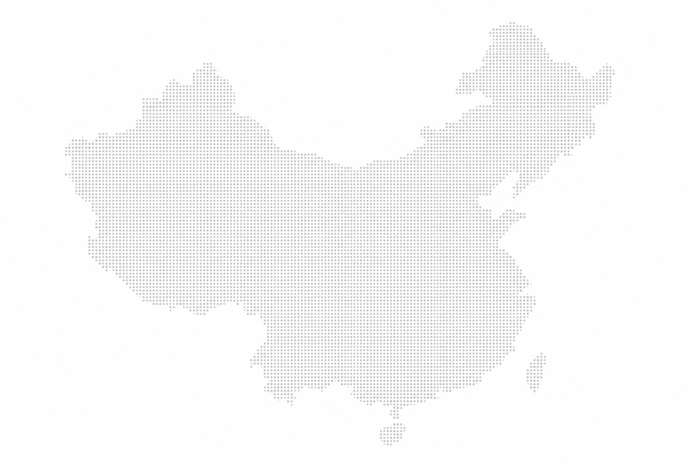
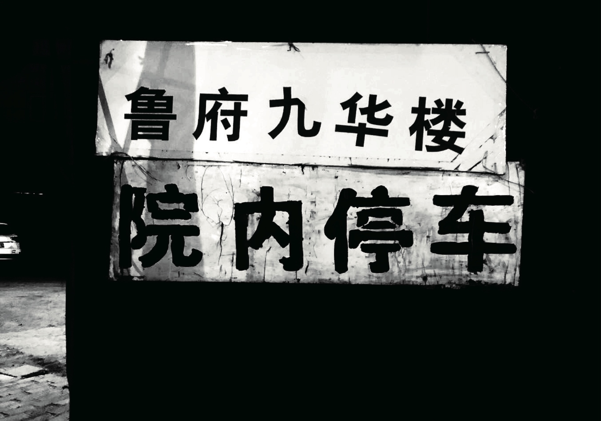
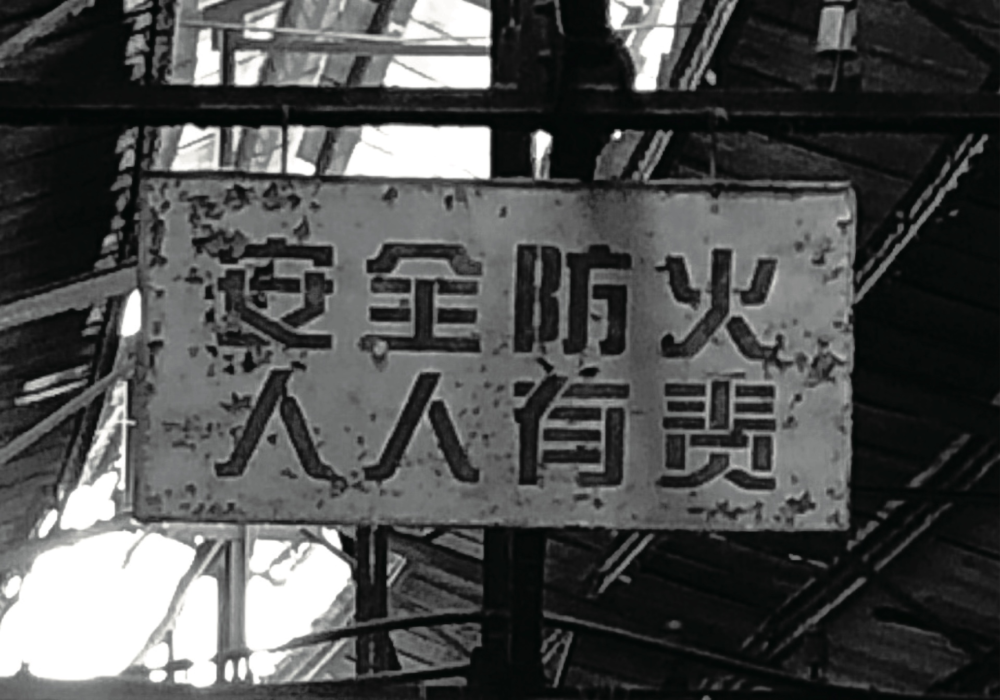
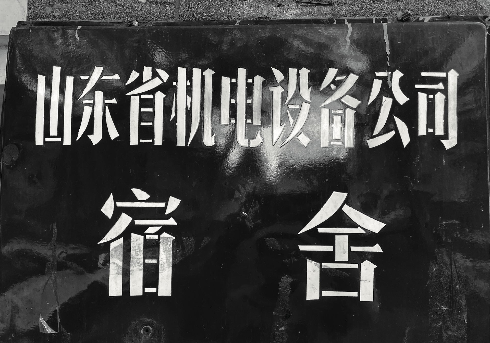
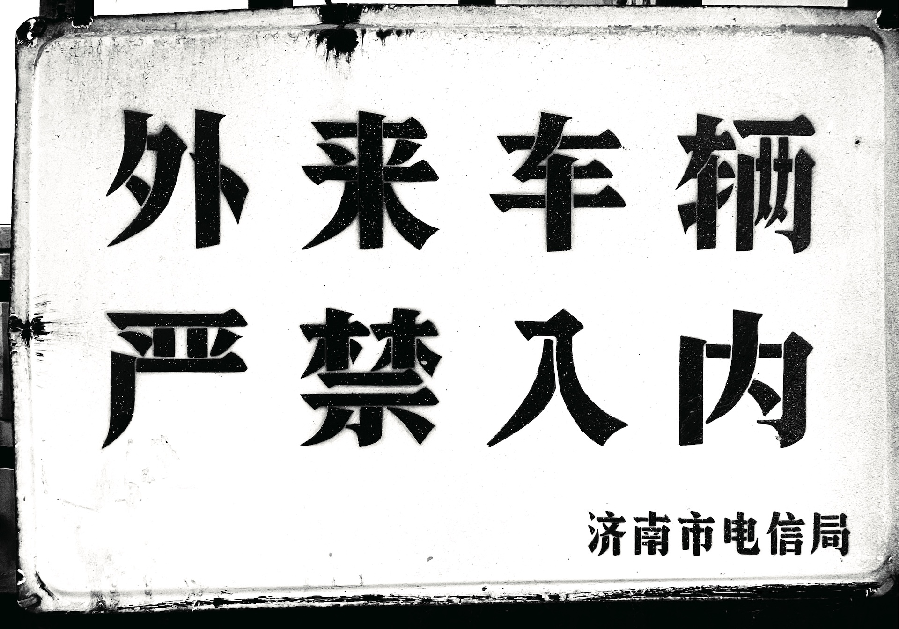
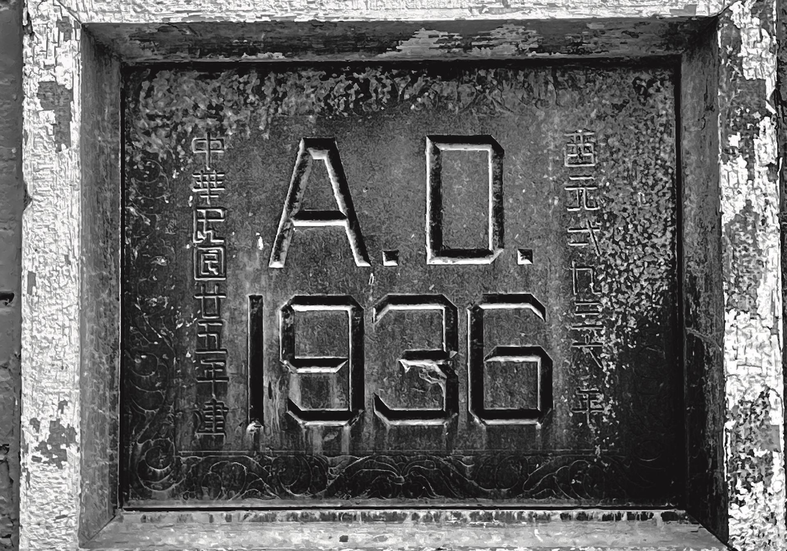

文字作为城市记忆的入口
从旧招牌、手写字、墙体文字与公共标识出发，观察文字与街道、行业、年代和生活方式之间的关系。
 向下阅读
向下阅读
PROJECT INTRODUCTION / 2023
城市文化记忆，不只存在于建筑与街道，也藏在一块旧招牌、一行手写字和一面褪色的墙上。这些文字曾经参与城市的日常生活，也记录着不同时期的审美、商业方式与地方经验。通过持续拍摄、收集与整理，我试图保存这些正在消失的视觉痕迹，让城市中被忽略的文字重新成为可阅读的文化记忆。
VISUAL ARCHIVE
ORDINARY WORDS
EXTRAORDINARY CITIES
ARCHIVE BROWSER
点击两侧图像或拖动切换档案，点击中间图像可放大查看。
城市文字样本文字依附于街道、商铺与公共空间，也在长期使用中形成独特的地方视觉语言。
当前筛选条件下暂无档案，请选择其他类别或城市。
ARCHIVE METHOD
文字留在街道上，也留在一座城市的记忆里。
从旧招牌、手写字、墙体文字与公共标识出发，观察文字与街道、行业、年代和生活方式之间的关系。
通过持续的现场拍摄、分类与编辑，将容易随城市更新而消失的文字景观转化为长期保存的视觉资料。
保留手工痕迹、地域习惯和时代特征，让“不标准”的字形呈现真实而丰富的城市视觉文化。
通过网站、影像与视觉设计的重新组织，使原本只存在于街巷中的文字进入新的传播环境。





